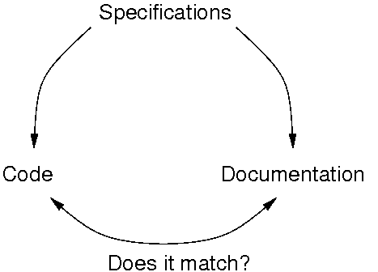

Running your code to see if it breaks.
Running the code you have just written is testing.
Structure & reuse those tests to be more efficient
Automated testing is a great way to detect regressions.
Important to migrate your project to Python 3.
You should have excellent unit tests with close to full coverage.
— PEP 3000
Most big projects (like Python and Django) require tests with code contribution.
Testing works.
It's not a trendy technology / language / framework pretending to solve all your problems.
program testing can be a very effective way to show the presence of bugs, but is hopelessly inadequate for showing their absence.
— Edsger W. Dijkstra, The Humble Programmer
Individual testing steps (unit test, component test,, and integration test) typically find less than 50 percent of the errors present each. The combination of testing steps often finds less than 60 percent of the errors present.
— Steve McConnel, Code Complete 2ed
PyUnit, included in the Python standard library
Similar to JUnit, the mother of all test frameworks.
import unittest
class MyTestCase(unittest.TestCase):
def test_add(self):
# Could also be 'assertTrue' or 'failUnless'
self.assert_(isinstance(2 + 4, int))
self.assert_([] + [] == [])
# More explicit error message if it fails
self.assertEqual([] + [], [])def test_div(self):
self.assertRaises(ZeroDivisionError,
lambda: 1 / 0)
self.assertRaises(ZeroDivisionError,
int.__div__, 1, 0)if __name__ == '__main__':
import unittest
unittest.main()$ python test.py .. ---------------------------------------------------------------------- Ran 2 tests in 0.000s OK
unittest.main() has handy features.python test.py --help to learn more.
import unittest
import tempfile
import shutils
class MyTestCase(unittest.TestCase):
def setUp(self):
# create fixtures
self.tempdir = tempfile.mkdtemp()
def tearDown(self):
# delete fixtures
shutils.rmtree(self.tempdir)
...def test_fixture_1(self):
# self.tempdir was just created
# Create a file
open(os.path.join(self.tempdir, 'test'), 'w')
# self.tempdir will be deleted after the function call
def test_fixture_2(self):
# Check that the file 'test' doesn't exist
self.assertRaise(IOError, open, os.path.join(self.tempdir, 'test'))TestSuitesuite1 = unittest.TestSuite(MyTestCase1(), MyTestCase2())
suite2 = unittest.TestSuite()
suite2.addTest(MyOtherTestCase())
big_suite = unittest.TestSuite(suite1)
big_suite.addTest(suite2)You can also iterate on a TestSuite
Unittest is boring: exactly what you would expect from a test framework.
Doctest is cool and funky ...
How do I make sure that my documentation and my code are synchronized?
Wait ... Did we see this before?
Documentation can be tests.
Doctest transforms documentation into real tests.
def factorial(n):
'''Return the factorial of n, an exact integer >= 0.
>>> factorial(1)
1
>>> [factorial(n) for n in range(6)]
[1, 1, 2, 6, 24, 120]
'''
if n == 0:
return 1
else:
n * factorial(n - 1)
if __name__ == '__main__':
import doctest
doctest.testmod()You can also put doctests in text files and execute those tests.
This is a documentation file.
The function hello_world() prints 'Hello World'.
>>> hello_world()
'Hello World'
More text ...def print_and_return(i):
'''
>>> print_and_return(42)
42
42
'''
print i
return iPotential gotcha!
def factorial(n):
'''
>>> factorial(-1)
Traceback (most recent call last):
...
ValueError: n must be >= 0
'''
if not n >= 0:
raise ValueError("n must be >= 0")
>>> object() # Doesn't work well with doctest
<object object at 0x20e0c8120>
>>> object() # doctest:+ELLIPSIS
<object object at ...>import unittest
import doctest
import my_module_with_doctests
# suite is a unittest.TestSuite()
suite = doctest.DocTestSuite(my_module_with_doctests)
runner = unittest.TextTestRunner()
runner.run(suite)Doctest good for simple tests, but noticeably bad when things become complex:
def __init__(self, f):
'''
>>> file_content = """title: test
... date: 2008-1-1
... author: test author
... encoding: utf-8
...
... test."""
>>> from StringIO import StringIO
>>> p = Post(StringIO(file_content))
>>> p
<Post('test', datetime.date(2008, 1, 1))>
>>> p.title == 'test'
True
>>> import datetime
>>> p.date == datetime.date(2008, 1, 1)
True
>>> p.content == 'test.'
True
>>> p.encoding == 'utf-8'
True
>>> p.author == 'test author'
True
>>> Post(StringIO('title: no payload\\ndate: 2008-1-1'))
<Post('no payload', datetime.date(2008, 1, 1))>
>>> Post(StringIO('title: no date'))
Traceback (most recent call last):
...
PostError: Error in post file <unknown filename>: No date defined
>>> Post(StringIO("""title: bad encoding
... date: 2008-1-1
... encoding: bad-encoding"""))
Traceback (most recent call last):
...
PostError: Error in post file <unknown filename>: unknown encoding: \
bad-encoding
>>> Post(StringIO("""title: bad date
... date: 200008-101-10"""))
Traceback (most recent call last):
...
PostError: Error in post file <unknown filename>: Unable to parse \
date '200008-101-10'
(Use YYYY-MM-DD [[HH:MM]:SS] format)
'''
Unreadable mess which should be in a unittest.TestCase
Doctest is for documenting first.
It is a good practice to duplicate relevant doctests in a unittest.TestCase.
Code coverage describes the degree to which the source code of a program has been tested.
nose: autodiscovery and execution of tests. Works with unittest and doctest.
$ nosetests path/to/project
Similar to py.test without resorting to too much magic
.
nose also support coverage via coverage.py
Find the presentation’s slides at http://henry.precheur.org/vanpyz_test/
Contact me henry@precheur.org.